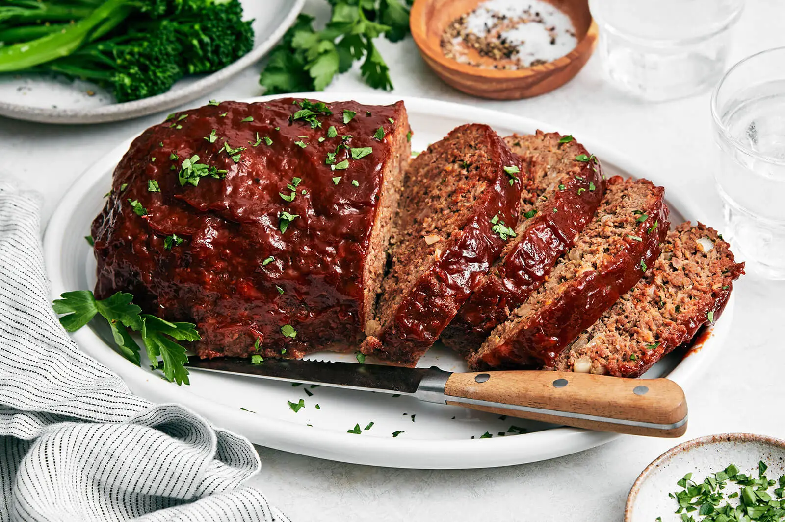

MeatLoaf

Description
A good meatloaf isn’t just ground beef slapped into a pan—it’s a masterpiece of texture and flavor when done right.
You take quality beef, mix it with breadcrumbs, eggs, and seasonings like Worcestershire sauce, garlic, and onion,
then shape it into a loaf that actually holds together instead of crumbling into disappointment
Ingredients
- 1 ½ lbs ground beef
- 1 cup breadcrumbs
- 1 small onion, finely chopped
- 2 cloves garlic, minced
- 1 egg
- ¼ cup milk
- 2 tbsp Worcestershire sauce
- 1 tsp salt
Steps
- Preheat the oven to 375°F (190°C).
- Prepare the mixture
- Shape the loaf
- Make the glaze
- Glaze it up
- Bake for 45 minutes,
- Finish baking for 15 more minutes,
Home